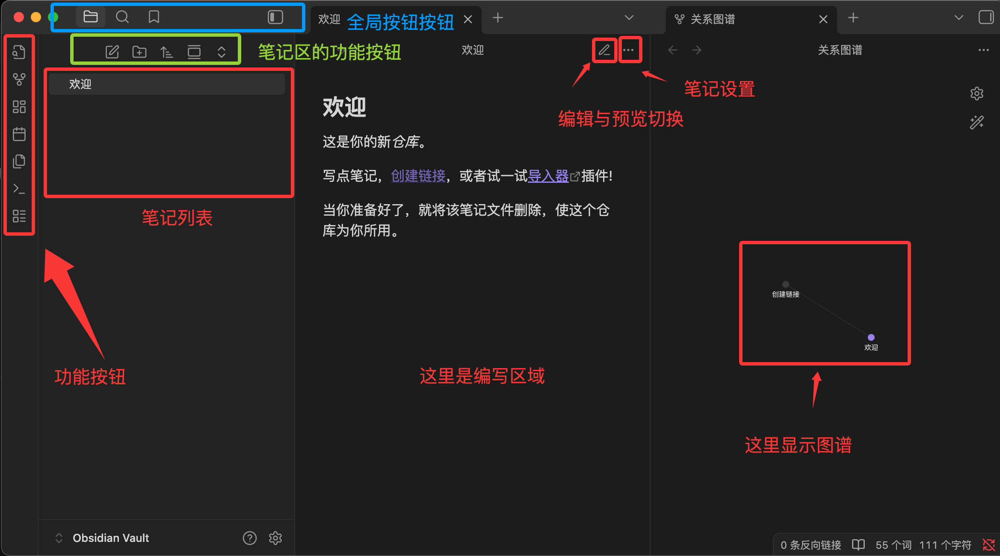

目录
- 1 介绍
- 2 安装
- 3 仓库
- 4 Markdown基础
- 5 双链与知识图谱
- 6 组织与管理
- 7 插件
- 8 同步与导出
- 9 结合 Claude Code 使用
- 10 Obsidian Web Clipper
1 介绍
Obsidian 是一款基于 Markdown 文件的个人知识库与笔记管理工具，主要用于知识整理、笔记记录和构建个人知识体系。
采用本地文件存储方式，所有笔记都以普通 Markdown 文档形式保存，便于迁移、备份和长期管理。
和传统笔记软件最大的区别不是能记笔记，而是它把笔记变成一个可连接（笔记之间可相互引用，形成知识网络）、可扩展（丰富的社区插件）、可计算的知识网络。
| 能力 | 说明 |
|---|---|
| 知识关联 | 通过双向链接自动建立知识之间的关系 |
| 本地存储 | 所有笔记都是普通 Markdown 文件，不依赖云数据库 |
| 知识图谱 | 自动生成知识关系网络图 |
| 插件扩展 | 支持日历、任务管理、AI、Git、思维导图等插件 |
| 跨平台 | 支持 Windows、macOS、Linux、Android 和 iOS |
与其他工具的差异
| 特性 | Obsidian | Notion | Roam Research |
|---|---|---|---|
| 存储方式 | 本地 Markdown 文件 | 云端数据库 | 云端数据库 |
| 离线可用 | 完全离线 | 需预先加载 | 需联网 |
| 双链能力 | 原生支持 | 有限支持 | 原生支持（大纲式） |
| 扩展性 | 1000+ 社区插件 | 少量集成 | 较少插件 |
| 价格 | 个人免费 | 免费增值 | 付费订阅 |
| 数据迁移 | 复制文件夹即可 | 需导出 | 需导出 |
1.1 核心概念
1、笔记即文件
在 Obsidian 中创建一篇笔记，实际上就是在某个文件夹中创建了一个 Markdown 文件。每一篇笔记就是你硬盘上的一个 .md 文件。
你可以在资源管理器中直接看到它，用 cat 命令读取它，用 Git 追踪它。
2、双向链接
# Docker 入门
Docker 是一种容器化技术，与 [[虚拟机]] 的关键区别在于...
在部署时，通常配合 [[Kubernetes]] 使用...
学习 Docker 之前建议先了解 [[Linux 基础]]...
当你打开「Docker 入门」这篇笔记时，你会看到它链接到了「虚拟机」「Kubernetes」「Linux 基础」三篇笔记。
同时，「Linux 基础」这篇笔记也会显示「有一篇叫 Docker 入门的笔记引用了我」。这就是双向链接。
3、知识图谱
图谱是你记笔记、建立链接之后自然生长出来的副产品。
2 安装
前往官网下载 官网
下载后就可以双击安装，选择语言等配置。
首次打开 Obsidian 你会看到三个选项：
创建新库 在本地新建一个 Vault
打开已有文件夹 将现有文件夹作为 Vault
同步远程仓库

- 左侧栏 (文件管理器)： 管理你的文件夹和笔记列表。
- 中间区域 (编辑器)： 你主要写作的地方，支持"实时预览"模式，即你输入 Markdown 符号时，它会立刻渲染成格式。
- 右侧栏 (面板)： 默认显示反向链接（即其他哪些笔记提到了你正在看的这篇笔记）和大纲。
- 命令面板 (Ctrl/Cmd + P)： 按此快捷键，输入你想要做的操作（如"创建新笔记"），无需点击菜单。
选择创建新库，为你的知识库起一个名字，选择一个存放位置。
可以在设置里修改外观，字体，行宽等等。
2.1 常用快捷键
| 操作 | macOS | Windows / Linux |
|---|---|---|
| 打开设置 | Cmd + , | Ctrl + , |
| 快速打开文件 | Cmd + O | Ctrl + O |
| 新建笔记 | Cmd + N | Ctrl + N |
| 打开命令面板 | Cmd + P | Ctrl + P |
| 切换编辑/阅读模式 | Cmd + E | Ctrl + E |
| 打开/关闭左侧边栏 | Cmd + [ | Ctrl + [ |
| 打开/关闭右侧边栏 | Cmd + ] | Ctrl + ] |
3 仓库
Vault 是 Obsidian 中最重要的概念。
Vault = 文件夹： 库其实就是你电脑上的一个普通文件夹，用来存放你所有的笔记文件。
3.1 目录结构
当创建一个 Vault 后，文件夹里会出现一个隐藏目录 .obsidian：
MyVault/
├── .obsidian/ ← Obsidian 的配置文件
│ ├── plugins/ ← 安装的插件存放在这里
│ ├── themes/ ← 主题文件
│ ├── snippets/ ← 自定义 CSS 片段
│ └── app.json ← 主配置文件
├── 你的第一篇笔记.md
└── ...
也支持多 Vault
注意：.obsidian 文件夹推荐纳入 Git 管理。这样你的插件配置、快捷键设置、主题偏好都会被版本控制。唯一的例外是 .obsidian/workspace.json，它记录了当前打开的标签页状态，可以加入 .gitignore。
3.2 第一个笔记与链接
-
按 Cmd/Ctrl + N 新建笔记
-
输入文件名
-
编辑
-
使用链接
例如 [[Markdown]] 这个链接，悬停在上面时会出现预览弹窗，点击则会跳转到名为「Markdown」的笔记。 如果这篇笔记尚不存在，点击后会自动创建。
4 Markdown基础
参考Markdown文档。
5 双链与知识图谱
5.1 [[ ]] 语法
用 [[笔记名]] 即可创建指向另一篇笔记的链接。
输入 [[ 后，Obsidian 会自动弹出搜索框，支持模糊匹配笔记名称。
如果链接指向的笔记尚不存在，Obsidian 会显示为灰色链接，点击后会自动创建对应的空白笔记。
别名链接
有时候笔记的文件名不够自然。使用 [[文件名|显示文字]] 语法，可以让链接文字更符合上下文。
更好的做法是在目标笔记的 Front Matter 中设置 aliases，之后所有指向该笔记的链接都可以使用别名。
参考6.1 Aliases别名章节。
5.2 块引用与标题引用
标题引用
使用 [[笔记名#标题]] 直接链接到笔记中的某个标题位置。
例如
详见 [[Python 基础#正则标定式]] 中的示例代码。
块引用
在目标段落的末尾添加一个 ^块ID，然后在其他笔记中用 [[笔记名#^块ID]] 引用该段落。
例如
<!-- 在「Python 基础」笔记中定义一个块 -->
列表推导式是 Python 中创建列表的简洁语法，
它可以将循环和条件判断写在一行内。 ^list-comp-def
在另一篇笔记中引用这个段落块
如 [[Python 基础#^list-comp-def]] 所述，列表推导式能大幅简化代码。
引用块在目标笔记中会以嵌入渲染的方式显示原文内容，而不仅仅是一个跳转链接。
嵌入整个笔记或段落
在链接前加一个感叹号 ![[笔记名]]，可以将目标笔记的完整内容嵌入当前笔记。
例如
## 常用代码片段
![[Python 列表操作速查]]
![[环境搭建#环境变量配置]]
5.3 反向链接面板
当打开一篇笔记，右侧面板的「反向链接」区域会列出所有引用了当前笔记的其他笔记。
不需要你手动记、不需要维护索引。
反向链接面板分为两个区域：
-
Linked Mentions：已经用 [[双链]] 语法显式链接到当前笔记的地方
-
Unlinked Mentions：虽然提到了当前笔记的标题文字，但没有加上 [[ ]] 链接的地方
5.4 关系图谱
局部图谱
在任意笔记中点击右上角的「更多选项 → 打开局部图谱」，会显示以当前笔记为中心的链接网络。
局部图谱的默认显示深度是 1 层（直接邻居），可以调整为 2-5 层来看到更广的关联。
全局图谱
点击左侧边栏的图谱图标，可以查看全库的链接关系图。
图谱中的符号含义：
- 节点大小：被链接次数越多，节点越大——自然突出了你知识体系中的核心概念
- 连线密度：两个笔记互相链接则连线更粗
- 节点颜色：可通过分组功能按路径、标签、文件名等条件分配颜色
图谱分组与过滤
在全局图谱的设置中，创建分组规则：
Group #1: 编程笔记
- path: 编程/
- 颜色：蓝色
Group #2: 读书笔记
- path: 阅读/
- 颜色：绿色
Group #3: 日记
- path: 日记/
- 颜色：灰色
通过分组，图谱能一目了然地展示不同领域的规模大小和交叉关系。
过滤器可以按关键词、标签或文件路径隐藏不需要显示的节点，避免图谱过于密集。
5.5 标签系统
标签是跨文件夹组织内容的重要手段。
标签写在正文或 Front Matter 中，用 # 标签名 的格式。
基础写法
#python #obsidian #笔记方法
嵌套写法：使用/创建层级标签，在标签面板中会展示为树状结构。
#编程/Python
#编程/JavaScript
#状态/草稿
#状态/已完成
标签表示「是什么属性」（语言、状态、类型），文件夹表示「在哪个项目或领域」。两者互补而非互斥。
6 组织与管理
6.1 Aliases 别名
同一篇笔记可以有多个名称入口，在 Front Matter 中设置 aliases 即可
在文件的最顶部（必须是第一行）输入三条横线 ---，然后在中间写入 aliases 属性，最后再以三条横线 --- 结束：
单个别名
---
aliases: 笔记别名
---
多个别名，写成一行
---
aliases: [JS, JavaScript, 脚本语言]
---
包含特殊字符的别名，写成多行
---
aliases:
- "C++"
- "问题: 根本原因"
- "标点符号【】"
---
在笔记 Front Matter 中定义标准别名，而不是每次用管道符 | 临时改写。这样别名统一管理，修改一次全库生效。
6.2 Templates 模板
Templates 是 Obsidian 的核心插件（内置但需手动启用），让你可以为常见类型的笔记定义模板。
启用和配置
在设置 → 核心插件中开启「模板」。
然后指定一个模板文件夹，所有模板文件都放在这个文件夹中。
创建笔记模板
例如
---
tags:
- 概念
created: {{date}}
---
# {{title}}
## 定义
一句话概括：是什么。
## 核心要点
- 要点一
- 要点二
- 要点三
## 与其他概念的关系
- 关联 [[概念A]]
- 区别于 [[概念B]]
## 参考资料
-
插入模板
新建笔记后，点击左侧边栏的「插入模板」按钮（或使用 Ctrl+P 搜索「模板：插入模板」），选择对应模板。
模板中的 {{title}} 会自动替换为笔记名称，{{date}} 替换为当前日期。
6.3 搜索与快速跳转
快速切换（Ctrl+O）
最常用的跳转方式，输入关键词即可搜索所有笔记文件名和别名，回车直接打开。
全局搜索（Ctrl+Shift+F）
搜索笔记的全文内容，支持高级搜索语法：
| 搜索语法 | 功能 | 示例 |
|---|---|---|
file: |
按文件名搜索 | file:Python |
path: |
按路径搜索 | path:编程/ |
tag: |
按标签搜索 | tag:#编程/Python |
line: |
按行内容搜索 | line:(import os) |
section: |
按标题区块搜索 | section:安装 |
| 组合搜索 | 用空格连接多个条件（AND 逻辑） | path:编程 tag:#Python 闭包 |
- 默认情况下，普通关键词搜索会同时匹配文件名和内容；使用运算符可以更精细地限定搜索范围。
- 空格表示“AND”，大写
OR表示“或”，-表示排除，如meeting -work。
6.4 书签
书签功能让你可以收藏常用笔记、搜索条件或文件夹。
右键点击任何文件、文件夹或搜索结果，选择「添加到书签」。
所有书签显示在左侧边栏的书签面板中，支持拖拽排序和分组。
书签可以
- 收藏搜索条件：比如「tag:#状态/进行中」作为一个动态书签，点击即执行该搜索
- 收藏高频笔记：主页索引、项目仪表盘、每日日记入口
- 按工作流分组：写作组、学习组、项目管理组各自独立
6.5 文件管理
示例
Vault/
├── 00-日记/ # Daily Notes 自动存放
├── 10-项目/ # 活跃项目
├── 20-领域/ # 持续关注的领域
├── 30-资源/ # 参考资料和摘录
├── 40-归档/ # 已完成或不再活跃
├── Templates/ # 模板文件夹
├── attachments/ # 图片和附件
└── 主页.md # 仪表盘笔记，链接到最重要的内容
文件夹名前的数字前缀确保在文件列表中按你想要的顺序排列，而不是按拼音排序。
随着笔记积累，你对组织方式的偏好会变得更明确，届时再调整也不迟。
7 插件
Obsidian 的强大之处，很大程度上来自于其插件市场。
Obsidian 的插件分为两大类：核心插件和社区插件，可以在设置选择打开查看。
核心插件
Obsidian 自带的、官方维护的功能模块。可以根据需要选择开启或关闭。
例如：
- 画布 (Canvas)： 让你在一个无限大的白板上自由布局笔记、图片和网页，进行视觉化的思维组织。
社区插件
由用户（开发者）创建、维护和分享的第三方功能扩展。
在安装第三方插件之前，Obsidian 默认开启安全模式。安装插件需要手动关闭安全模式，Obsidian 会提醒用户注意安全风险（建议只安装下载量大、评分高且功能明确的插件）。
| 插件名称 | 主要功能 | 典型应用场景 |
|---|---|---|
| Dataview | 将笔记库视为数据库，用类 SQL 查询语言索引、过滤、展示 Markdown 中的元数据与任务 | 自动生成任务列表、汇总带特定标签的项目或书籍清单、制作动态仪表盘 |
| Excalidraw | 在 Obsidian 中嵌入 Excalidraw，创建手绘风格图表与思维导图 | 制作流程图、概念草图、手写注释与视觉笔记 |
| Calendar | 在右侧边栏添加月历视图，与每日笔记/周记深度集成 | 快速查看和跳转到过去的每日笔记，形成日程回顾与时间管理 |
| Advanced Tables | 增强 Markdown 表格编辑：自动格式化、按列排序、公式计算、导出 CSV 等 | 轻松对齐和编辑复杂表格，无需手动调整空格 |
| Kanban | 创建基于 Markdown 的看板视图，拖拽管理任务卡片 | 任务管理、项目进度追踪、将想法从“待办”拖到“完成” |
| Obsidian Git | 将 Vault 自动备份到 Git 仓库（如 GitHub），支持版本控制与历史回溯 | 实现版本控制和多设备同步，提供额外的安全保障 |
7.1 安装和管理
-
进入插件设置
- 点击左下角的 "设置" (齿轮图标)
- 在侧边栏找到 "核心插件" 和 "第三方插件"。
-
安装第三方插件的步骤
- 进入 "第三方创建" 选项卡。
- 关闭安全模式： Obsidian 会提示你进行此操作。
- 点击 "浏览"。
- 在搜索框输入插件名称（如 Dataview）。
- 点击插件，然后点击 "安装"。
- 激活插件： 安装完成后，点击 "启用" 按钮。插件才会开始工作。
插件安装后，通常会在左侧栏、右侧栏或通过命令面板 (Ctrl + P) 来调用其功能。
7.2 核心插件推荐与使用
7.2.1 Canvas
Obsidian 内置的无限画布工具，用卡片和连线来组织思想、规划项目、绘制图表。
在文件列表中右键选择「新建画布」，或在命令面板搜索「Canvas」。
Canvas 文件以 .canvas 扩展名存储，本质上是一个 JSON 文件，可以用文本编辑器查看和编辑。
在 Canvas 中双击空白处创建卡片，或拖入以下内容：
- Markdown 笔记文件（自动创建链接卡片）
- 图片（拖入即显示）
- 网页链接（自动创建嵌入卡片）
鼠标悬停在卡片边缘会出现连接点，拖拽到另一张卡片即可创建连线。
连线可以添加文字标签（如「依赖于」「导致」「参考」），并选择颜色和线型。
框选多张卡片后右键选择「创建分组」，可以为它们添加背景色和标题。
7.2.2 Outline：大纲面板
大纲插件在右侧边栏显示当前文档的标题树。对于长文档的导航尤其有用
- 自动解析文档中的 # ## ### 标题，生成层级树
- 点击标题可快速跳转到文档对应位置
- 当前正在阅读的标题会高亮显示
- 拖拽标题可以在文档中重新排列章节顺序
7.2.3 Backlinks 与 Outgoing Links
双链功能的核心 UI 呈现。
Backlinks（反向链接）
显示哪些笔记链接到了当前笔记。
每个反向链接会显示链接所在的上下文（前后几行文字），让你不用跳转就能判断关联的内容。
展开每条反向链接，可以看到更多上下文，甚至直接展开该笔记的完整内容。
Outgoing Links（出链）
显示当前笔记链接到了哪些其他笔记。
与 Backlinks 对应，它展示的是当前笔记指向的外部分笔记清单。
两个面板结合使用，可以完整了解一篇笔记在知识网络中的位置——谁引用了它，它引用了谁。
两个面板顶部都有搜索过滤框，输入关键词可以快速筛选：
- 按路径过滤：只显示特定文件夹内的反向链接
- 按关键词过滤：只显示包含特定文字的反向链接
7.2.4 Workspaces：工作区布局
不同任务需要不同的面板布局。
写作时你可能希望收起所有侧边栏只留编辑区，整理笔记时你需要文件列表和标签面板同时可见。
例如
| 工作区 | 布局 |
|---|---|
| 写作模式 | 关闭所有侧边栏，只留编辑区，专注内容输出 |
| 整理模式 | 左侧：文件列表 + 标签面板，右侧：大纲 + 反向链接 |
| 研究模式 | 左侧：搜索结果，中间：主笔记 + Canvas，右侧：反向链接 + 大纲 |
| 回顾模式 | 左侧：书签，中间：日记 + 全局图谱，右侧：反向链接 |
保存工作区
调整好面板布局后，在左侧边栏的「工作区」面板中点击「管理工作区」，输入名称保存当前布局。
切换工作区
在工作区面板中点击已保存的布局，一键切换。
也可以通过 Ctrl+P 搜索「工作区：加载工作区」来切换。
8 同步与导出
8.1 Obsidian Sync
Obsidian Sync 是官方提供的端对端加密云同步服务。是付费服务，按年订阅。
在'设置'-'同步'中配置
8.2 Git + GitHub 版本管理
将 Vault 初始化为 Git 仓库，推送到 GitHub 私有仓库。
# 进入你的 Vault 目录
cd ~/Documents/我的知识库
# 初始化 Git 仓库
git init
# 创建 .gitignore 文件，忽略 Obsidian 的配置和缓存
echo ".obsidian/workspace.json" >> .gitignore
echo ".obsidian/workspace-mobile.json" >> .gitignore
echo ".trash/" >> .gitignore
# 首次提交
git add .
git commit -m "初始化知识库"
# 关联 GitHub 私有仓库并推送
git remote add origin git@github.com:username/my-vault.git
git push -u origin main
# 之后使用 commit + push + pull 同步
更多参考Git文档。
8.3 云盘同步
将 Vault 文件夹放在 iCloud Drive 或 OneDrive 中
8.4 zip打包
同步不等于备份——同步会把你误删的文件也同步删除。
可以定期将整个 Vault 打包为 .zip，存到外接硬盘或云盘
8.5 导出
打开笔记，点击右上角「更多选项 → 导出 PDF」。
导出的 PDF 会保留当前的 Obsidian 主题样式。
安装 Pandoc 社区插件后，可以将笔记导出为 Word、HTML、LaTeX 等多种格式。
Obsidian Publish 是官方付费服务，可以将选定的笔记发布为网站。
发布的网站保留双链、图谱、搜索等 Obsidian 核心功能。
9 结合 Claude Code 使用
9.1 使用Obsidian的插件
参考Claude Code文档安装使用Claude。
从 GitHub Release https://github.com/YishenTu/claudian/releases/latest 下载 main.js、manifest.json 和 styles.css 这三个文件。
在你的 Obsidian 库的插件文件夹 plugins 中（如果没有创建一个），新建一个名为 claudian 的文件夹。
将下载好的三个文件复制到这个 claudian/plugins/ 文件夹中。
.obsidian/
└── plugins/
└── claudian/
├── main.js # 插件的编译后 JavaScript 主文件（包含所有逻辑）
├── manifest.json # 插件元数据（ID、名称、版本、描述、最低 Obsidian 版本等）
└── styles.css # 插件的 CSS 样式
在 Obsidian 中启用该插件：设置 → 社区插件 → 开启「Claudian」插件开关。通过设置，可以设置为中文语言。
打开任意笔记，左侧边栏会出现一个 机器人图标（或用命令面板 Ctrl+P 输入 Claudian: Open Chat）即可使用。
第一次打开会提示你选择 Claude 模型（可以设置国内的大模型），输入框打 / 会出现所有可用技能（skills）。
9.2 使用Claude的MCP
在 claude 中对话让它安装
需要启用 obsidian 第三方插件 Local REST API with MCP 。还需要它的key
端口 https://127.0.0.1:27124/
10 Obsidian Web Clipper
Obsidian 官方出品的浏览器扩展，它能将任何网页一键保存为本地的 Markdown 笔记。免费、开源、无广告。
安装
从浏览器扩展安装使用即可。在设置里面设置中文语言。
首次使用时，它会自动检测正在运行的 Obsidian 仓库并完成关联，无需额外配置。
整页剪藏
将页面以 Markdown 格式保存到你的仓库。
自动提取文章正文（去除广告和侧边栏）；标题、作者、发布日期、描述；页面 URL 和来源域名；代码块（保留语法高亮标记）、数学公式（LaTeX 格式）
高亮剪藏
选中你感兴趣的段落，点击高亮按钮，只保存划线部分。
- 点击扩展图标
- 选择「高亮选中内容」
- 积累好所有高亮后，点击「添加到 Obsidian」一次性保存
也可以右击鼠标选中 Obsidian Web Clipper 保存：
高亮内容会以引用块（>）的形式写入笔记。再次访问该页面时，你的高亮依然可见。
模板
默认情况下所有网页都以同一格式保存，而模板让你可以针对不同类型的网页定制保存结构。
我们可以在设置页面中模板选项下的 Default 中查看
内置模板
| 模板类型 | 提取内容 |
|---|---|
| 文章模板 | 自动填入 author、published、description，正文以文章格式保存 |
| 食谱模板 | 提取食材列表（自动转为待办复选框 - [ ]）、步骤、营养信息 |
| 电影/书籍模板 | 提取导演、评分、时长、主演、简介等 |
| 学术论文模板 | 完整保留代码块和 LaTeX 公式 |
自定义模板
在扩展设置 → 模板 → 新建模板中，你可以自定义以下内容：
| 配置项 | 说明 | 示例 |
|---|---|---|
| 模板名称 | 模板的标识名称 | 「YouTube 视频」「GitHub 仓库」 |
| 笔记名称 | 支持变量 | {{title}} 或 {{date}}-{{title}} |
| 保存位置 | 指定仓库中的文件夹 | Clippings/Articles |
| Properties | 笔记顶部自动填入的结构化属性（YAML 前置元数据） | author、published、tags 等 |
| 笔记正文 | 完全自定义的 Markdown 模板 | 可嵌入变量和任意 Markdown 内容 |
设置「模板触发条件」后，访问特定网站时会自动应用对应模板，无需手动选择。触发条件为 URL 包含 xxx
变量速查
| 变量 | 说明 |
|---|---|
{{title}} |
页面标题 |
{{url}} |
当前 URL |
{{author}} |
作者 |
{{published}} |
发布日期 |
{{description}} |
页面描述 |
{{content}} |
正文内容（Markdown 格式） |
{{highlights}} |
所有高亮内容 |
{{date}} |
当前日期 |
{{site}} |
网站名称 |
{{domain}} |
域名 |
{{image}} |
社交分享图片 URL |
{{words}} |
字数统计 |